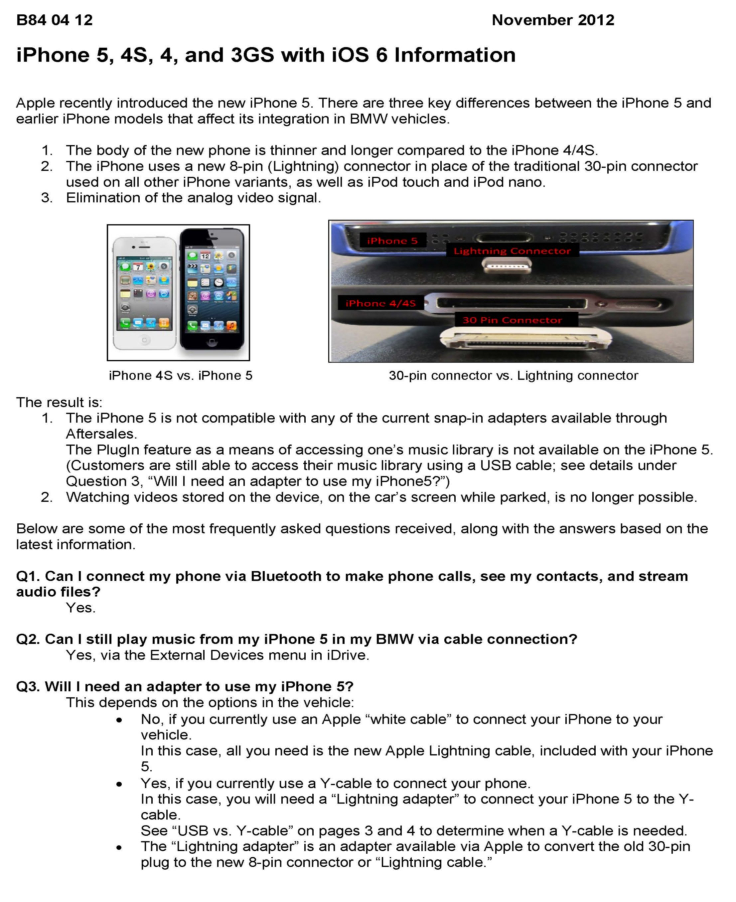

Cell Phone - iPhone(R) 5, 4S, and 3 GS with iOS 6 Information
SI B84 04 12Communication Systems
November 2012
Technical Service
SUBJECT
iPhone 5, 4S, 4, and 3GS with iOS 6 Information
MODEL
All equipped with one or more of the following options:
^ 6NL or 639 or 7H8 - BMW Assist with enhanced Bluetooth and USB
^ 6FL - Smartphone integration
^ 6NH or 7H9 - Hands-free Bluetooth and USB Audio
INFORMATION
With the release of Apples new iPhone 5 and iOS 6 software, there have been many questions regarding the new phone and software.
The information in the attachment to this Service Information will help answer these questions. It can be printed and given to the customer if needed. The attachment provides information on the differences between the new iPhone 5 and the previous version in the following areas:
1. Visual comparison
2. Connectivity
3. Functionality
Refer to the PDF file in the "Attachment" section of this bulletin for complete details.
Information on the iPhone 5 is also available via the following:
^ www.bmwusa.com/bluetooth
^ Aftersales bulletin B-31-1012-13-iPhone5/iOS6
^ PKoD - Product Knowledge on Demand
NOTE:
This SI will be updated as new information is received.
WARRANTY INFORMATION
Not applicable.
ATTACHMENTS

IPhone 5, 4S, 4, and 3GS with iOS Information